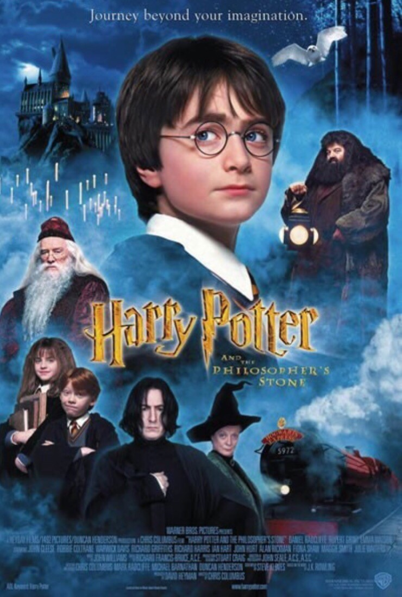

Harry Potter And The Sorcerer's Stone
- Harry Potter And The Sorcerer's Stone summery
On his 11th birthday, an invitation to the magical world flies
to Harry Potter, an orphan boy who lives in captivity, being condemned
by a mean aunt and a mean cousin. The lonely boy with a skinny frame and
a lightning-shaped scar turned out to be a legendary hero who saved the
magical world from the evil wizard. It was a magical world to be in Gyeongcheon
and accept him as a true friend, inviting him to attend Hogwarts, Britain's best
school of magic, and waiting for Harry. Entering a fantasy and real world, such as
a frenetic Quidditch game played on moving stairs, entrances and broomsticks,
Harry shows genius talent and falls into a dangerous adventure to protect the "magic stone."
- Premiere : 2001 .12.14.
- Director : Chris Columbus
- GPA : 9.22
